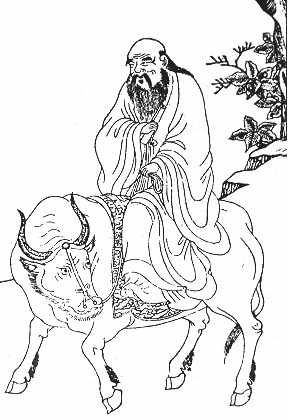

|
|
75 LAO TSE ± ABAD KE-4 SM
Dari
beribu-ribu judul buku yang pernah ditulis di Cina, mungkin
yang paling banyak diterjemahkan dan dibaca di luar negeri
itu adalah sebuah buku ditulis lebih dari 2000 tahun yang
lalu, terkenal dengan nama Lao Tse atau Tao Te Ching. Buku
Tao Te Ching ini atau "Cara lama dan Kekuatannya" adalah
naskah utama di mana filosofi Taoisme diperinci.
Buku ini buku ruwet, ditulis dalam gaya khas yang luar
biasa dan mampu menyuguhkan pelbagai rupa penafsiran. Ide
sentralnya berkaitan dengan masalah Tao yang lazim
diterjemahkan dengan "Jalan" atau "Jalur." Tetapi, konsepnya
agak kabur, karena buku Tao Te Ching sendiri dimulai dengan
kalimat: "Tao yang akan dijelaskan bukanlah Tao yang abadi;
nama yang disebut di sini bukanlah nama yang abadi." Tetapi,
dapatlah kita katakan bahwa Tao berarti secara kasarnya
"Alam" atau "Hukum Alam."
Taoisme beranggapan bahwa individu jangan bergulat
melawan Tao melainkan harus tunduk menghambakan diri dan
bekerja bersamanya. (Seorang Taoist dapat menunjuk contoh
air yang lembutnya tak terbatas, yang mengalir tanpa protes
menuju daratan rendah dan yang tak melawan kekuatan selemah
apa pun, tak terhancurkan, tetapi karang yang sekokoh apa
pun bisa luluh pada akhirnya).
Untuk seorang pribadi manusia, kesederhanaan dan
kewajaran merupakan hal jadi anjuran. Kekerasan harus
dijauhi, seperti juga halnya bergulat untuk uang dan
prestise. Orang tidak boleh bernafsu mengubah, dunia,
melainkan harus menghormatinya. Bagi pemerintahan, langkah
yang dianggap bijak adalah berbuat tidak begitu aktif,
banyak mengatur ini melarang itu. Apalagi, aturan dan
batasan sudah kelewat banyak. Karena itu menambah lagi
undang-undang, atau memperkeras ketentuan-ketentuan lama
yang sudah ada, hanya mengakibatkan keadaan tambah buruk.
Pajak yang tinggi, rencana-rencana pemerintah yang terlalu
ambisius, menggalakkan perang, kesemuanya ini berlawanan
dengan filosofi Taoisme.
Menurut tradisi Cina, penulis Tao Te Ching adalah seorang
bernama Lao Tse yang katanya sejaman tetapi lebih tua dari
Kong Hu-Cu. Tetapi, Kong Hu-Cu hidup di abad ke-6 SM. Dan
keduanya --baik dari sudut gaya maupun isi tulisan-- hanya
sedikit ilmuwan masa kini percaya bahwa Tao Te Ching ditulis
pada masa begitu dini. Ada beda pendapat tentang waktu yang
sesungguhnya penyusunan buku itu. (Tao Te Ching sendiri tak
pernah menyebut nama orang tertentu, tidak juga tempat,
tanggal, atau kejadian-kejadian historis). Tetapi, tahun 320
SM merupakan perkiraan yang pantas-sebetulnya dalam waktu
delapan puluh tahun dari waktu yang sesungguhnya, dan
mungkin lebih dekat lagi.
Keluarga penganut faham Taoisme memberi persembahan
kepada bulan purnama menjelang musim gugur.
Masalah ini membuat suatu sengketa pendapat tajam
mengenai waktu bahkan menyangkut adanya Lao Tse sendiri.
Sementara pihak yang berwenang percaya tradisi bahwa Lao Tse
hidup di abad ke-6 SM, karenanya berkesimpulan dia tidaklah
menulis Tao Te Ching. Sarjana-sarjana lain menganggap orang
itu tak lebih dari tokoh dongeng belaka. Pendapat saya
sendiri, yang hanya disepakati oleh sebagian kecil sarjana,
adalah sebagai berikut: (1) Lao Tse itu memang betul-betul
ada orangnya dan memang penulis Tao Te Ching; (2) dia hidup
di abad ke-4 SM ; (3) Cerita bahwa Lao Tse sejaman tetapi
lebih tua dari Kong Hu-Cu adalah keterangan yang
dibikin-bikin, yang fiktif dan dikarang oleh filosof Taoist
yang datang belakangan sekedar untuk tujuan menambah
prestise terhadap orangnya dan bukunya.
Baik dicatat, dari para penulis-penulis Cina terdahulu
baik Kong Hu-Cu (551-479 SM), atau Mo Ti (abad 5 SM), atau
Meng-tse (371-289 SM) tak satu pun menyebut baik Lao Tse
maupun Tao Te Ching. Tetapi, Chuang Tse, seorang filosof
Taoist kenamaan --yang muncul sekitar tahun 300 SM menyebut
nama Lao Tse berulang kali.
Karena soal ada atau tidaknya di dunia ini manusia yang
namanya Lao Tse itu masih jadi pertanyaan, selayaknya kita
pun meragukan detail-detail biografinya. Tetapi, ada sumber
yang patut dihargai dalam bentuk pernyataan sebagai berikut:
Lao Tse dilahirkan dan hidup di Cina bagian utara. Sebagian
dari masa hidupnya dia menjadi ahli sejarah atau seorang
pembimbing bagian arsip pemerintahan, besar kemungkinan di
kota Loyang, ibukota kerajaan dinasti Chou. Lao Tse bukanlah
namanya yang sesungguhnya, melainkan sekedar panggilan
kehormatan yang secara kasarnya berarti "sesepuh." Dia
beristri dan punya putera bernama Tsung. Si Tsung ini
kemudian jadi jendral di negeri Wei.
Meskipun Taoisme bermula dari falsafah sekuler, tetapi
semacam gerakan keagamaan berkembang dari sana. Tetapi,
karena Taoisme sebagai sebuah filosofi melanjut atas dasar
khususnya gagasan yang tertuang dalam buku Tao Te Ching,
"Agama Taoist" ini segera diliputi dengan kepercayaan dan
cara ibadah yang penuh takhyul yang sedikit sekali kaitannya
dengan ajaran Taoisme.
Berpegang pada dugaan bahwa Lao Tse adalah penulis
sesungguhnya buku Tao Te Ching, pengaruhnya betul-betul
luas. Buku itu amat ringkas (isinya kurang dari 6000 huruf
Cina, karena itu masih kurang banyak untuk dimuat dalam
selembar koran!), tetapi dia berisi banyak buah pikiran yang
mendalam. Seluruh barisan filosof Taoisme berpegang pada
buku ini selaku pangkal tolak dari ide-idenya sendiri.
Di Barat, Tao Te Ching jauh lebih populer ketimbang
tulisan-tulisan Kong Hu-Cu atau filosof Kong Hu-Cu yang mana
pun. Nyatanya, sedikitnya ada empat puluh macam terjemahan
bahasa Inggris diterbitkan dari buku itu, lebih banyak dari
terjemahan buku apa pun, kecuali Injil.
Sedangkan di Cina, faham Kong Hu-Cu umumnya merupakan
falsafah anutan yang dominan, dan jelas ada pertentangan
antara buah pikiran Lao Tse dengan Kong Hu-Cu. Kebanyakan
orang Cina menganut faham yang disebut belakangan itu.
Tetapi Lao Tse secara pukul rata dihargai tinggi oleh para
penganut Kong Hu-Cu. Dan lebih dari itu, dalam banyak hal,
ide-ide Taoisme dibaur begitu saja dengan ide-ide Kong
Hu-Cu, karena itu berpengaruh terhadap berjuta-juta orang
walau tidak menamakan dirinya Taoist. Begitu pula, Taoisme
punya pengaruh yang jelas terhadap perkembangan filosofi
Buddha di Cina, khususnya terhadap Buddha Zen. Kendati
sedikit orang sekarang menyebut dirinya Taoist, tak ada
seorang filosof Cina kecuali Kong Hu-Cu yang punya pengaruh
begitu luas dan begitu mantap jalan pikiran manusia seperti
halnya Lao Tse.
|